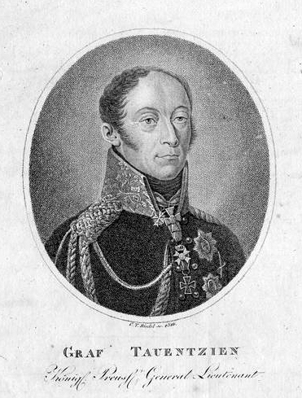
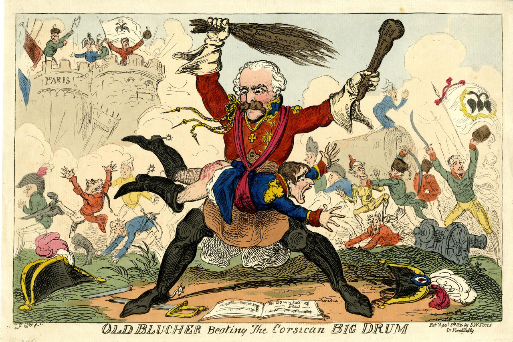
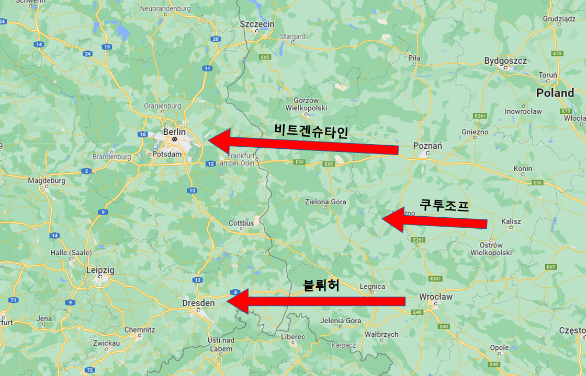
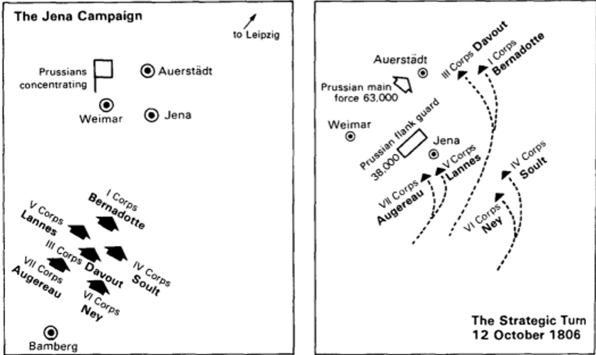

나폴레옹을 잡을 작전 - 샤른호스트의 비책
게시: 2022-05-02T06:30:23+09:00
프로이센이 러시아와 손잡고 나폴레옹과 전쟁을 하기로 했으니 먼저 총사령관을 선정해야 했습니다. 여기서부터 프로이센 내부에서 말이 많았습니다. 크네제벡과 같은 인물은 러시아군과의 협력이 최우선이니 러시아 짜르의 신임을 받고 있는 타우엔치엔(Bogislav Friedrich von Tauentzien) 장군이 적절하다고 주장했습니다. 그러나 크네제벡이 아무리 프리드리히 빌헬름의 측근이라고 해도 그는 중령에 불과했고 인사권자도 아니었습니다. 가장 영향력 있는 인물인 국방부 장관 샤른호스트는 바로 블뤼허(Gebhard Leberecht von Blücher)를 천거했습니다. 이유는 딱 하나, 프로이센 장군들 중에서 오직 블뤼허만이 나폴레옹에게 겁을 먹지 않는다는 것이었습니다.

(타우엔치엔 장군입니다. 그는 1813년 이전에도 별다른 전적을 보여주지는 못했는데, 이유야 어쨌건 1806년 패전 이후 프로이센군이 대폭 감군할 때 그는 다른 장군들과는 달리 잘리지 않고 살아남아 브란덴부르크 여단을 지휘했습니다. 그는 1813~1814년 전쟁 때 주로 국민방위군(Landwehr)으로 이루어진 부대를 이끌고 슈테틴과 토르가우, 그리고 비텐베르크 등 오데르 강 및 엘베 강의 요새들을 포위하고 항복을 받아내는 역할을 주로 했습니다.) 그러나 블뤼허는 프랑스보다 프로이센 내부에 더 많은 적을 가지고 있었습니다. 다른 문제에 대해서는 샤른호스트의 말을 잘 따르던 사람들조차 '그래도 블뤼허는 아니지'라며 강하게 반발했습니다. 한마디로 그는 늙고 자주 아프고 무모한데다 정신 상태도 좀 이상하다는 것이었습니다. 그는 일단 1844년생으로 당시 무려 71세였으니 자주 아픈 것은 어쩔 수 없었습니다. 정신 상태가 이상하다는 말은 좀 심한 비방 같지만, 확실히 그는 군인의 용맹성이라고 치부하기에는 지나치게 나대는 경향이 있었습니다. 그는 이미 젊은 나이에 프리드리히 대왕으로부터 '블뤼허 대위 보고 꺼지라고 하셈'이라는 소리를 듣고 실제로 군에서 쫓겨나기도 했으며, 옛날 이야기할 것도 없이 바로 작년인 1812년, 이미 나폴레옹와 손을 잡고 러시아 원정에 동참하기로 한 프리드리히 빌헬름에게 대놓고 공개적으로 러시아와 손을 잡고 나폴레옹과 싸워야 한다고 떠들어대다 사실상 군에서 쫓겨난 바가 있었습니다. 그러나 샤른호스트는 고집을 굽히지 않았고 오직 블뤼허만이 나폴레옹에게 주눅 들지 않고 프로이센군을 이끌 수 있다고 주장했는데, 이는 블뤼허가 1806년 아우어슈테트 전투에서 대패하고 프랑스군에게 결국 항복할 때까지 그의 참모장으로 일했던 사람이 다름 아닌 샤른호스트 본인이었다는 인연과도 상관이 있을 것입니다. 참모장이라면 못된 상사의 온갖 짜증을 온몸으로 받아내는 직책이었을 텐데, 평민 출신으로 온갖 설움을 겪었던 샤른호스트가 블뤼허보다 더 높은 직책에 오른 뒤에도 모두가 싫어하는 인물인 옛상관 블뤼허를 사령관으로 천거한 것은 블뤼허의 인물됨을 간접적으로 보여주는 대목입니다.

(그림은 1815년 워털루 전투 이전에 그려진 것으로서 '코르시카의 큰 북을 두들기는 블뤼허'라는 영국 만화입니다. 블뤼허는 독특하게도 프로이센이 조국이 아니었고 마클렌부르크 공국의 영토인 로스톡 출신으로서, 스웨덴군에서 군 생활을 시작했습니다. 그러다 7년 전쟁 당시 스웨덴과 전쟁 중이던 프로이센군에게 포로로 잡혔는데, 그를 포로로 잡은 연대장이 블뤼허의 인물됨을 마음에 들어하여 그대로 그 프로이센 연대에 배속시켜 프로이센군이 되었습니다. 이후 그의 과격한 성격은 여기저기서 말썽을 일으켰고, 결국 1772년 폴란드 반란 전쟁 당시 카톨릭 신부에게 가한 가학행위 때문에 소령 진급에서 제외되었습니다. 거기까지였으면 어땠을지 모르지만 겁없는 젊은 대위 블뤼허는 공개적으로 불손하기 짝이 없는 사직서를 내던졌고, 프리드리히 대왕이 직접 그의 이름을 언급하며 꺼지라고 명령을 내렸다고 합니다. 그는 프리드리히 대왕이 죽고 나서야 겨우 복직이 되었습니다.) 샤른호스트의 말이라면 귀기울여 듣던 프리드리히 빌헬름조차도 블뤼허를 총사령관으로 임명하는 것은 좀 아니다 싶었는지 결국 블뤼허는 총사령관이 아니라, 브레슬라우에 집결할 슐레지엔 군단의 지휘관을 시키는 것으로 대충 마무리를 지었습니다. 샤른호스트도 더 고집을 부리지 않았는데, 그 이유는 프로이센군 총사령관이라는 것이 어차피 부질없는 직책이기 때문이었습니다. 샤른호스트는 누구보다도 프로이센군의 상태를 잘 알고 있었고, 그래서 나폴레옹과의 전쟁에서 주축은 어디까지나 러시아군이라고 생각하고 있었습니다. 그래서 샤른호스트는 칼리쉬에 있는 동안 러시아군 지휘관들의 호감을 끌어내려 갖은 노력을 다했습니다. 그리고 샤른호스트의 위명이 자자했으므로 발트해 연안 출신 독일 장교들을 싫어하는 경향이 짙었던 러시아군 진영에서도 그는 유례없는 존중을 받았습니다. 그러나 정작 최고 사령관인 쿠투조프는 샤른호스트는 물론 프로이센군 전체에 대해서도 떨떠름한 입장이었습니다. 쿠투조프는 애초에 오데르 강을 건너 독일로 진격하는 것 자체에 대해 열의가 없었고, 프로이센군이라고 하면 연상되는 것이 1806년의 예나-아우어슈테트의 참패 밖에 없었던 것입니다. 그러니 프로이센군에 대해서는 별 기대가 없었을 뿐만 아니라 오히려 짐이 될 것이라고 생각하고 있었고, 그가 프로이센군에게 바라는 것은 식량 보급과 후방 경호 정도에 불과했습니다. 이런 쿠투조프를 상대로 샤른호스트가 얼마나 진땀을 흘렸을지 짐작이 갑니다. 이 두 나라의 군대가 연합으로 작전을 하려면 단일 명령체계에 따라야 했습니다. 뜻하는 바는 러시아군이 프로이센 장군의 지휘를 받든가 프로이센군이 러시아 장군의 지휘를 받아야 한다는 뜻이었습니다. 이 문제에 대해 이야기가 나오자 쿠투조프는 빙 둘러서 '지휘관의 계급에 따라 명령 체계를 정하자'라고 점잖게 제시했고, 샤른호스트는 그에 대해 그냥 솔직하게 '프로이센군은 보조 역할을 할 병력 밖에 없으니 러시아군의 지휘를 받겠다'라고 까놓고 이야기를 했습니다. 이렇게 샤른호스트가 솔직담백하게 나온 덕분에, 결국 지휘관 문제는 나름 꽤 조화롭게 결정되었습니다. 러시아군은 원래 좌익-중군-우익으로 나누어져 있었는데, 이미 북부의 러시아 우익과 함께 움직이고 있던 요크 및 뷜로우의 프로이센군은 우익 사령관인 비트겐슈타인의 지휘를 받고, 상대적으로 병력이 약했던 남부의 러시아 좌익의 빈칭게로더는 곧 합류할 프로이센의 슐레지엔 군단과 함께 합류하여 블뤼허의 지휘를 받기로 했습니다. 그리고 전체 연합군은 쿠투조프의 지휘를 받았습니다. 이제 총감독을 정했으니 시나리오가 있어야 했는데, 연합군이 고려하던 작전안 2가지는 모두 프로이센 쪽에서 나온 것이었습니다. 하나는 크네제벡이 제안한 것으로서, 비트겐슈타인의 우익과 블뤼허의 좌익이 모두 마그데부르크(Magdeburg)로 향하여 외젠의 지휘 하에 거기 주둔한 프랑스 엘베 방면군, 즉 러시아 원정군의 잔존부대를 격파하고 엘베 강변의 요새들을 포위하고 프로이센과 베스트팔렌 등 북부 독일 전체의 봉기를 이끌자는 것이었습니다. 그러나 이 작전안은 그냥 평범하기 짝이 없는 것이었고, 머지 않아 병력을 몰고 나타날 나폴레옹의 새로운 주력군에 대해서는 아무 대책이 없었습니다. 결국 짜르 알렉산드르가 채택한 것은 바로 샤른호스트가 칼리쉬에 머무는 동안인 3월 1일 2일 양일간 휙휙 짜서 제출한 작전안이었습니다. 이 작전안의 요지는 연합군이 크게 남북 양방향으로 갈라져서 큰 집게 모양으로 움직이는 것이었습니다. 비트겐슈타인의 북부군은 베를린으로 진격하고 블뤼허의 남부군은 드레스덴으로 진격하되, 토르마소프의 중군과 함께 움직이는 쿠투조프는 그들로부터 딱 중앙 위치를 차지하고 약 3일 행군거리 뒤를 따라가며 남북 어느 쪽이든 도움이 필요한 쪽에 적절한 지원을 해준다는 것이 이 계획의 핵심이었습니다. 이렇게 좌우 양익으로 갈라져 움직이는 이유는 이들 양익이 가능한 한 넓은 지역을 휩쓸며 프랑스군으로부터 해방시켜 전쟁에 필요한 인원과 물자를 확보하자는 것이었습니다. 다만 이렇게 좌우로 갈라질 경우 중앙이 텅 비게 되고 그 사이를 프랑스군이 파고들며 역습할 위험이 있기 때문에, 중앙에서 조금 뒤떨어진 채 쿠투조프의 중군이 따라오며 전체 작전을 조율하기로 했습니다.

(샤른호스트가 짠 작전간의 개요를 표시하면 이렇습니다. 참고로 베를린과 드레스덴 사이의 거리는 약 180km, 당시 군대의 행군으로는 8~9일이 걸렸습니다.) 이 안이 채택된 이유는 크게 2가지 이유에서였습니다. 먼저, 독일 지역은 아직 프랑스가 지배하는 곳이었지만 적어도 프로이센의 열혈 애국자들이 보기에는 깨어나는 독일 민족 정신으로 들끓고 있는 지역이었습니다. 연합군이 반나폴레옹의 기치를 들고 나서기만 하면 언제든지 봉기하여 연합군에 가담할 가능성이 높았고, 그런 봉기는 병력과 물자 부족으로 허덕이던 연합군에게는 꼭 필요한 일이었습니다. 두번째는 당장 나폴레옹이 어떻게 나올지 알 수가 없다는 것이었습니다. 외젠이 이끄는 마그데부르크의 엘베 방면군은 그렇게 위협적인 존재는 아니라고 보았습니다. 러시아군이 지치고 재편성과 보급, 충원이 시급했듯이, 엘베 방면군도 해봐야 사기가 떨어지고 지쳐빠진 패잔병에 불과했기 때문이었습니다. 하지만 명망 높은 샤른호스트가 짠 것이라고 해도, 이 작전안에는 내재적인 문제가 많았습니다. 무엇보다, 이 작전안은 1806년 예나-아우어슈테트에서 그야말로 개박살이 났던 프로이센군의 일원이었던 샤른호스트의 트라우마가 그대로 반영된 것이라고도 할 수 있었습니다. 복수의 부대들이 적정거리를 유지하며 전진하다가 적을 포착하면 그에 대응하여 유연하게 움직인다는 것은 바로 1806년 나폴레옹이 프로이센 침공 때 써먹었던 Battalion Carré (바따용 까레, 사각 대형, sqaure battalion) 전술을 어설프게 베낀 것이었기 때문이었습니다. 당시 나폴레옹이 이끌던 그랑다르메는 란과 다부, 네와 술트 등의 쟁쟁한 원수들이 이끌던 유럽 최고의 전쟁 기계였습니다. 당시 그랑다르메의 움직임은 마치 현대전에서 데이터 링크로 연결된 각 유닛들이 유기적으로 정찰하며 정보를 공유하는 모습을 보여주었습니다. 각 군단들은 약 1일 정도의 행군거리를 유지하면서 거의 60km에 달하는 지역에 걸쳐 넒게 산개하여 움직이되, 각자 탐지한 바를 최소한 1일 단위로 공유하면서 긴밀한 협조 하에 작전을 펼쳤습니다. 무전기도, 자동차도 없던 시절에 이것이 가능했던 것은 나폴레옹이 그 네트워크의 중심에서 모든 정보를 수집하고 처리한 뒤, 다시 적절한 작전 명령서를 보내주는 방법으로 핵심 서버 역할을 수행했기 때문입니다.

(1806년 예나-아우어슈테트 전투 때 보여준 나폴레옹의 기가 막힌 Battalion Carré 기동을 보십시요. 쿠투조프와 블뤼허, 비트겐슈타인이 이걸 해낸다고요? ㅋ) 그러나 1813년 오데르 강을 넘으려던 지친 러시아군은 물론이고, 이제 막 징집되어 어리버리한 신병들이 절반 이상이던 프로이센군은 1806년의 단련된 프랑스군이 아니었고, 쿠투조프나 블뤼허, 비트겐슈타인은 나폴레옹은 커녕 란이나 다부에 비교할 만한 인재들도 아니었습니다. 그리고 나폴레옹의 군단들이 1806년에 산개했던 거리는 60km 정도였으나, 샤른호스트의 작전에 따르면 비트겐슈타인과 블뤼허는 무려 180km나 떨어지게 되어 있었습니다. 더군다나 서로에 대한 신뢰가 떨어지는 러시아군과 프로이센군이 나폴레옹과 같은 대영웅의 지휘하에 기계처럼 움직이던 그랑다르메처럼 움직이는 것도 불가능했습니다. 그리고 실제 러시아군과 프로이센군 각각의 상태는 서로가 서로에게 알려준 것보다 더 심각했습니다. Source : The Life of Napoleon Bonaparte, by William Milligan Sloane Napoleon and the Struggle for Germany, by Leggiere, Michael V
https://en.wikipedia.org/wiki/Gebhard_Leberecht_von_Bl%C3%BCcher https://en.wikipedia.org/wiki/Bogislav_Friedrich_Emanuel_von_Tauentzien